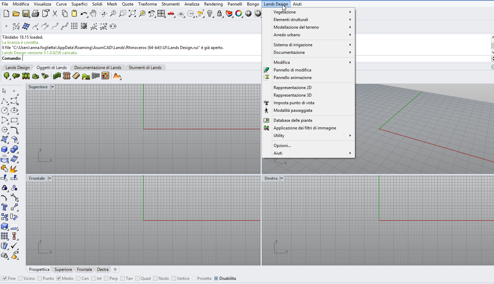

La maggior parte dei comandi del software è organizzata nel menu a discesa di Lands Design. Tutti gli oggetti di Lands Design e gli strumenti inclusi nelle barre degli strumenti vengono visualizzati con le opzioni corrispondenti.

Menu a discesa di Lands Design.
NOTA: il menu a discesa deve apparire quando Lands Design viene caricato nella sessione attuale di Rhino, dopo l'installazione di Lands Design. Se non appare, Lands Design potrebbe utilizzare un file obsoleto come "Lands Design.tb" (in Rhino 4.0) o "Lands Design.rui" (in Rhino 5). In tal caso, occorre eliminare il file manualmente, disinstallare Lands Design e reinstallarlo. I file "Lands Design.tb" e "Lands Design.rui" si trovano nelle seguenti directory: